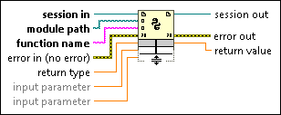

Python Node
Owning Palette: Python Functions
Requires: Base Development System
Calls a Python function directly.
The Python Node is expandable and shows data types for the wired inputs and outputs. You can configure the Python Node to specify the Python session, module path, and function name.
The Python Node is not supported on real-time or FPGA targets.

 Add to the block diagram Add to the block diagram |
 Find on the palette Find on the palette |